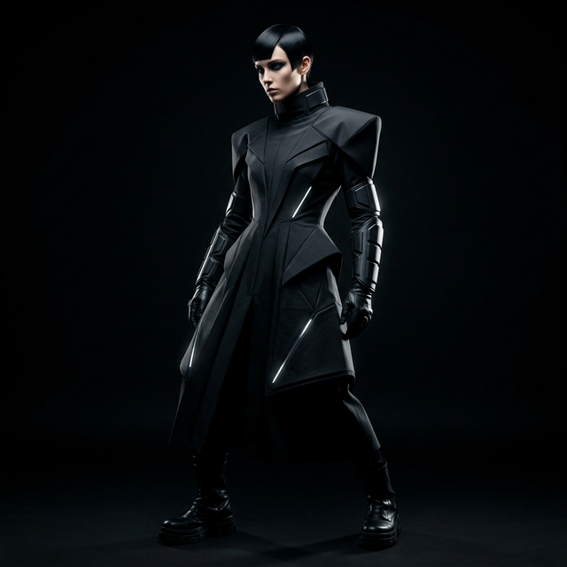
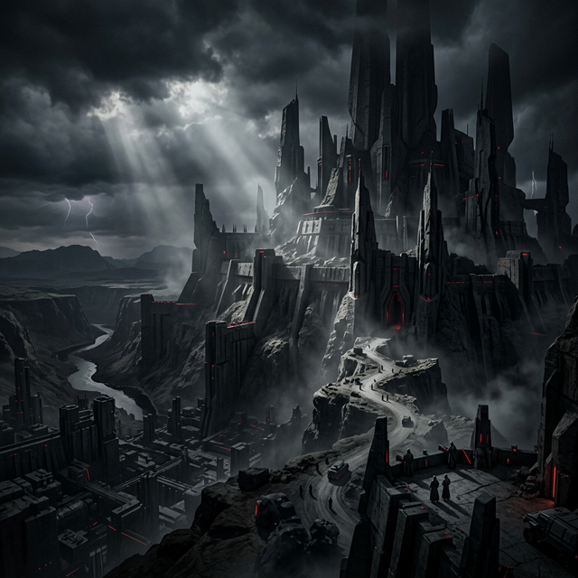

IronLog: Diario de Entrenamiento
Aplicación web completa para registrar rutinas, series y repeticiones. Diseñada para atletas que buscan un seguimiento preciso de su progreso.
Ver Demo en VídeoConstruyendo soluciones escalables, limpias y eficientes. Especialista en Inteligencia Artificial, Automatización y 'Vibecoding' de Alto Nivel.
Soluciones tecnológicas avanzadas para escalar tu negocio.
Optimizo procesos repetitivos para que las empresas ahorren tiempo y recursos con IA de vanguardia.
Creación de aplicaciones web y móviles a medida, enfocadas en rendimiento y experiencia de usuario.
Producción de contenido visual innovador y dinámico usando los últimos modelos generativos de vídeo.
Prototipado rápido y ágil. Desarrollo asistido por IA para entregar resultados funcionales en tiempo récord.
Selección de proyectos recientes impulsados por IA y automatización.
Aplicación web completa para registrar rutinas, series y repeticiones. Diseñada para atletas que buscan un seguimiento preciso de su progreso.
Ver Demo en VídeoCreación de secuencias animadas completas estilo cartoon utilizando prompts avanzados e Inteligencia Artificial de Google VEO.
Ver CortoExploración de los límites del hiperrealismo en la generación de vídeo con IA. Dirección de arte y prompt engineering para cine de terror.
Ver SecuenciaDiseño y desarrollo de una API RESTful escalable con arquitectura hexagonal. Optimización de consultas a la base de datos reduciendo latencias en un 60%. Construido sobre principios SOLID para un mantenimiento impecable.
Ver Repositorio
Dirección de arte sintética para concepto de campaña publicitaria. Flujo de trabajo completo: desde el 'prompt engineering' inicial hasta la composición final y escalado de texturas con modelos de difusión.
Ver Caso de EstudioExploración de "Creative Coding" usando puro CSS para generar texturas animadas complejas y metales líquidos. Desarrollo de interfaces de alto impacto visual sin depender de vídeos pesados de fondo, optimizando el rendimiento web.
Ver Código Interactivo
Generación algorítmica de entornos a gran escala ("Environment Design"). Uso avanzado de prompts para forzar iluminación volumétrica cinematográfica, sombras puras y escala arquitectónica de grado Hollywood, demostrando control total sobre el encuadre sintético.
Imágenes Alta ResoluciónSoy un desarrollador apasionado por el "Vibecoding" y la inteligencia artificial. Creo que el futuro del desarrollo no trata solo de escribir código, sino de orquestar soluciones que aporten un valor real e inmediato.
Mi stack incluye el desarrollo moderno de interfaces, la integración de modelos de IA (Antigravity, GPT, Claude), y arquitecturas escalables.
Estoy disponible para nuevos retos, automatizaciones a medida o un café virtual para hablar de tecnología.
"El código es solo una herramienta. El verdadero valor reside en entender el problema, orquestar las mejores tecnologías y construir la visión impecable de un producto."— Filosofía del Vibecoding (Inspirada en S. Jobs)